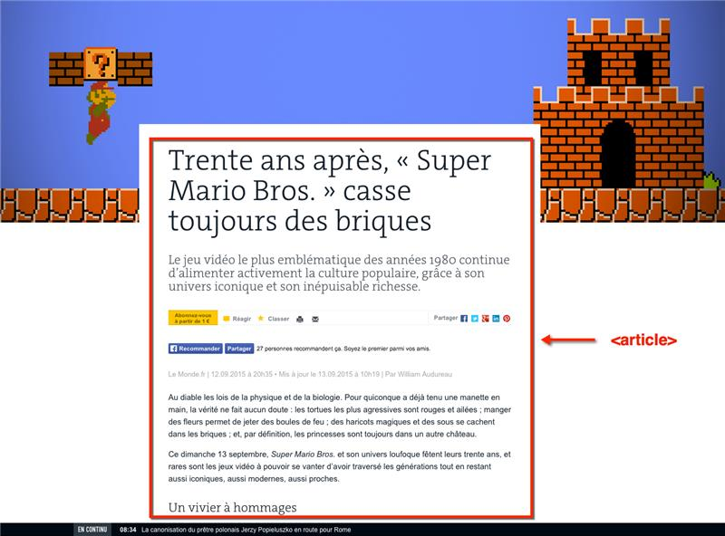
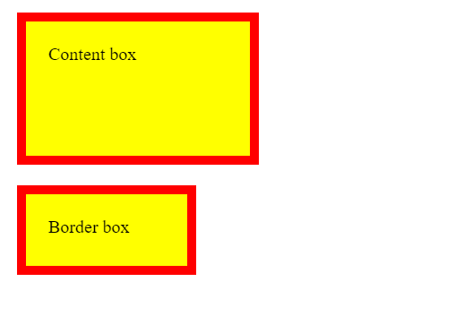

La balise <section> sert à regrouper des contenus en fonction de leur thématique, c'est une section autonome. Elle englobe généralement
une portion du contenu au centre de la page. En règle générale elles ont un en-tête mais pas toujours.
Exemple: un menu de navigation doit être enveloppé dans un élément <nav>, en revanche une liste de résultats de recherche n'a
pas d'éléments spécifiques et pourrait être placé dans une <section>.
Exemple
<section>
<h2>Ma section de page</h2>
<p>Bla bla bla bla</p>
</section>
N'utilisez pas l'élément <section> comme conteneur générique; c'est à cela que sert <div>, en particulier lorsque la coupe est uniquement à des fins de style.
La balise <article> sert quant à elle à englober une partie d'une page qui pourrait être reprise sur un autre site (c'est le cas par exemple des actualités),
un article doit donc avoir un sens en soi.
Exemple
<article>
<h1>Mon article</h1>
<p>Bla bla bla bla</p>
</article>

La propriété CSS box-sizing définit la manière dont la largeur et la hauteur totales d'un élément sont calculées (par défaut c'est la hauteur et la largeur).
Exemple
div {
width: 160px;
height: 80px;
padding: 20px;
border: 8px solid red;
background: yellow;
}
.content-box {
box-sizing: content-box;
/* Largeur totale : 160px + (2 * 20px) + (2 * 8px) = 216px
Hauteur totale : 80px + (2 * 20px) + (2 * 8px) = 136px
Largeur de la boîte de contenu : 160px
Hauteur de la boîte de contenu : 80px */
}
.border-box {
box-sizing: border-box;
/* Largeur totale : 160px
Hauteur totale : 80px
Largeur de la boîte de contenu : 160px - (2 * 20px) - (2 * 8px) = 104px
Hauteur de la boîte de contenu : 80px - (2 * 20px) - (2 * 8px) = 24px */
}
<div class="content-box">Content box</div>
<br>
<div class="border-box">Border box</div>

Content-box vous donne le comportement de dimensionnement par défaut. Si vous définissez la largeur d'un élément sur 100 pixels,
la zone de contenu de l'élément aura une largeur de 100 pixels, et la largeur de toute bordure ou remplissage sera ajoutée à la largeur de rendu finale, ce qui rend l'élément plus large que 100 pixels
Border-box indique au navigateur de prendre en compte toute bordure et remplissage dans les valeurs que vous spécifiez pour la largeur et la hauteur d'un élément. Si vous définissez la largeur d'un élément sur 100 pixels,
ces 100 pixels incluront toute bordure ou remplissage que vous avez ajouté, et la zone de contenu se rétrécira pour absorber cette largeur supplémentaire.
L'élément HTML <nav> représente une section d'une page ayant des liens vers
d'autres pages ou des fragments de cette page. Autrement dit, c'est une section
destinée à la navigation dans un document (avec des menus, des tables des matières,
des index, etc.). Se retrouve parfois dans le header
Exemple
<nav class="menu">
<ul>
<li><a href="#Accueil">Accueil </a> </li>
<li><a href="#Apropos">À propos </a> </li>
<li><a href="#Contact">Contact </a> </li>
</ul>
</nav>